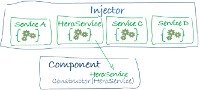

Mi az az Angular?
Az Angular egy TypeScript-alapú ingyenes és nyílt forráskódú webalkalmazás-keretrendszer, amelyet a Google Angular csapata, valamint egyénekből és vállalatokból álló közösség vezet. Az Angular egy teljes újraírása ugyanazon csapattól, amely az AngularJS-t építette.
Komponensalapú keretrendszer skálázható webes alkalmazások építéséhez. Jól integrált könyvtárak gyűjteménye található meg, amelyek a funkciók széles skáláját fedik le, beleértve az útválasztást, az űrlapkezelést, az ügyfél-kiszolgáló kommunikációt és még sok mást. Fejlesztői eszközkészlet, amely segíti a kód fejlesztését, építését, tesztelését és frissítését. Az Angularral egy olyan platform előnyeit használhatjuk ki, amely az egy fejlesztőre szabott projektektől a vállalati szintű alkalmazásokig skálázható. Az Angular úgy lett kialakítva, hogy a frissítés a lehető legegyszerűbb legyen, így minimális erőfeszítéssel kihasználhatja a legújabb fejlesztések előnyeit. A legjobb az egészben, hogy az Angular ökoszisztéma több mint 1,7 millió fejlesztő, könyvtárszerző és tartalomkészítő változatos csoportjából áll.
Komponensek

A komponensek azok az építőelemek, amelyek egy alkalmazást alkotnak. Egy komponens tartalmaz egy TypeScript osztályt egy @Component() dekorátorral, egy HTML-sablont és stílusokat. A @Component() dekorátor a következő Angular-specifikus információkat adja meg:
- Egy CSS-szelektor, amely meghatározza, hogy a komponens hogyan kerül felhasználásra egy sablonban. A sablonban lévő HTML-elemek, amelyek megfelelnek ennek a szelektornak, a komponens példányai lesznek.
- Egy HTML sablon, amely utasítja az Angular-t, hogyan kell megjeleníteni a komponenst.
- Egy opcionális CSS-stíluskészlet, amely meghatározza a sablon HTML-elemeinek megjelenését.
Sablonok

Minden komponensnek van egy HTML sablonja, amely meghatározza, hogy az adott komponens hogyan jelenik meg. Ezt a sablont vagy soron belül, vagy a fájl elérési útvonala alapján határozza meg.
Egy Angular HTML-sablon egy nézetet vagy felhasználói felületet jelenít meg a böngészőben, ugyanúgy, mint a hagyományos HTML, de sokkal több funkcióval. Az Angular olyan szintaxis elemeket ad hozzá, amelyek kiterjesztik a HTML-t, így dinamikus értékeket illeszthetünk be a komponensből. Az Angular automatikusan frissíti a renderelt DOM-ot, amikor a komponensünk állapota megváltozik.
Amikor az Angular CLI-vel Angular alkalmazást hozunk létre, az app.component.html fájl az alapértelmezett sablon, amely helyőrző HTML-t tartalmaz. A sablon szintaxis útmutatói megmutatják, hogyan lehet az UX/UI-t irányítani az osztály és a sablon közötti adatok koordinálásával.
Függőségek injektálása
A függőségi injektálás lehetővé teszi, hogy a TypeScript osztályok függőségeit deklaráljuk anélkül, hogy gondoskodnánk azok példányosításáról. Ehelyett az Angular gondoskodik helyettünk a példányosításról. Ezzel a tervezési mintával tesztelhetőbb és rugalmasabb kódot írhatunk.
A függőségi injektálás megértése nem kritikus az Angular használatának megkezdéséhez, de mint legjobb gyakorlat erősen ajánlott. Az Angular számos aspektusa kihasználja valamilyen mértékben.
Amikor egy függőséget kérünk, az injektor ellenőrzi a nyilvántartását, hogy van-e már ott egy példány. Ha nem, akkor egy új példányt hoz létre és tárol a nyilvántartásban. Az Angular létrehoz egy egész alkalmazásra kiterjedő injektort (más néven "gyökér" injektort) az alkalmazás bootstrap folyamata során, valamint szükség szerint további injektorokat. A legtöbb esetben nem kell manuálisan létrehozni az injektorokat, de tudni kell, hogy van egy réteg, amely összeköti a szolgáltatókat és a fogyasztókat.
Veziók
| Kiadás | Kiadás dátuma | Kiadás utolsó verziószáma | Támogatás dátuma |
|---|---|---|---|
| 14 | 2022.06.02. | 14.2.7 | 2023.12.02. |
| 13 | 2021.10.03. | 13.3.11 | 2023.05.04. |
| 12 | 2021.05.13. | 13.2.16 | 2022.10.12. |
| 11 | 2020.10.11. | 11.2.14 | 2022.05.11. |
| 10 | 2020.06.24. | 10.2.5 | 2021.12.24. |
| 9 | 2020.02.06 | 9.1.13 | 2020.08.06. |